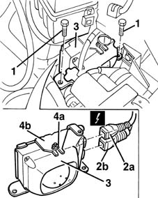
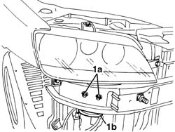
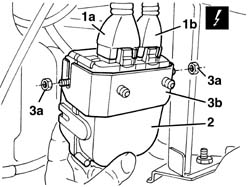

5580E46 ANTITHEFT DEVICE ECU / SIREN UNIT R + R
- Path
- Procedures > 55 ELECTRICAL EQUIPMENT > 5580 SPECIAL ACCESSORIES > 5580E ANTI-THEFT DEVICE > 5580E46 ANTITHEFT DEVICE ECU / SIREN UNIT R + R
- Kind
- repair procedure (removal / refitting; the operation number is the code)
- Applies to
- all engines; all production periods
- Interactive page
- https://sloeber94.github.io/elrnDB-fMltpl/en/#/2891990
Applies to: all engines; production: fino a 05/99, da 09/03, da 06/99 a 03/02, da 04/02 a 08/03, fino a 05/04
 Removing
Removing
 Refitting
RefittingOp. 1048A10 AIR CLEANER FILTERING ELEMENT - REPLACE
Op. 1048A12 AIR CLEANER SUPPORT - R R WITH AIR CLEANER ASSEMBLY REMOVED
Op. 5550C30 L/H OR R/H FRONT TURN SIGNAL (ONE) - R+R
(left side)
1. Undo the bolts fixing the control unit bracket.
2. Move the control and the bracket slightly and disconnect the electrical connections (2a, 2b).
 | Name | Connector |
|---|---|---|
2a | Alarm remote control receiver |
| Name | Connector |
|---|---|---|
2b | Alarm remote control receiver |
3. Recover the control unit and bracket.
4. If necessary, undo the nuts (4a) and separate the control unit from the bracket (4b).

Applies to: all engines; production: fino a 05/99, da 09/03, da 06/99 a 03/02, da 04/02 a 08/03, fino a 05/04
Refitting
RemovingCheck that the control unit is undamaged.
If removed, position the control unit on the bracket and fix it using the nuts.
Connect the electrical connections to the control unit.
Place the control unit with the bracket in position and fix it using the bolts.
Op. 5550C30 L/H OR R/H FRONT TURN SIGNAL (ONE) - R+R
(left side)
Op. 1048A12 AIR CLEANER SUPPORT - R R WITH AIR CLEANER ASSEMBLY REMOVED
Op. 1048A10 AIR CLEANER FILTERING ELEMENT - REPLACE
Connect the battery.
Verificare la funzionalità del sistema utilizzando Examiner o altri strumenti di diagnosi.
Applies to: all engines; production: da 06/04
Removing
Refitting- Working underneath the right front headlight, undo the nuts (1a) and move the anti-theft control unit (1b).

Applies to: all engines; production: da 06/04
- Disconnect the electrical connections (1a and 1b).
- Keep the anti-theft control unit.
- If necessary, undo the nuts (3a) and remove the bracket (3b).

Applies to: all engines; production: da 06/04
Refitting
Removing- Check that the control unit is not damaged.
- If removed, position the control unit bracket and secure it using the nuts.
- Connect the electrical connections.
- Position the control unit and secure it using the nuts.
- Op. 7055B10 LH OR RH REFLECTOR(ONE) ON REAR BUMPERS - R R
- Check the operation of the system using the Examiner or other diagnostic equipment.
Topics linked from this page (4)
- 1048A10 AIR CLEANER FILTERING ELEMENT - REPLACE
- 1048A12 air cleaner support - r r with air cleaner assembly removed
- 5550C30 l/h or r/h front turn signal (one) - r+r
- 7055B10 LH OR RH REFLECTOR(ONE) ON REAR BUMPERS - R R